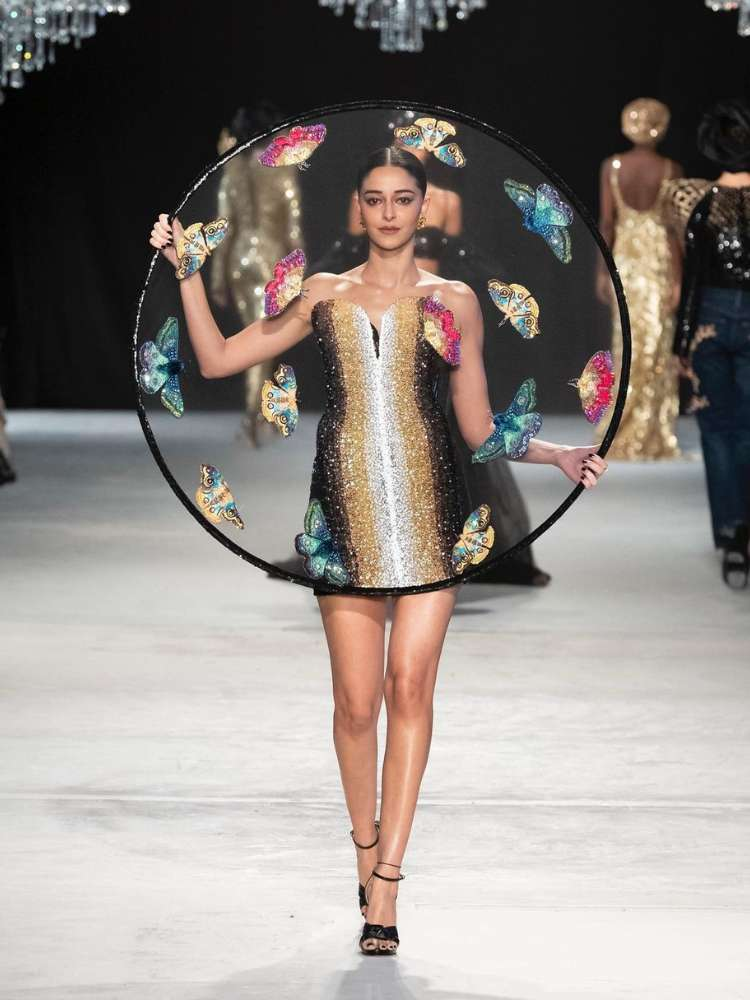
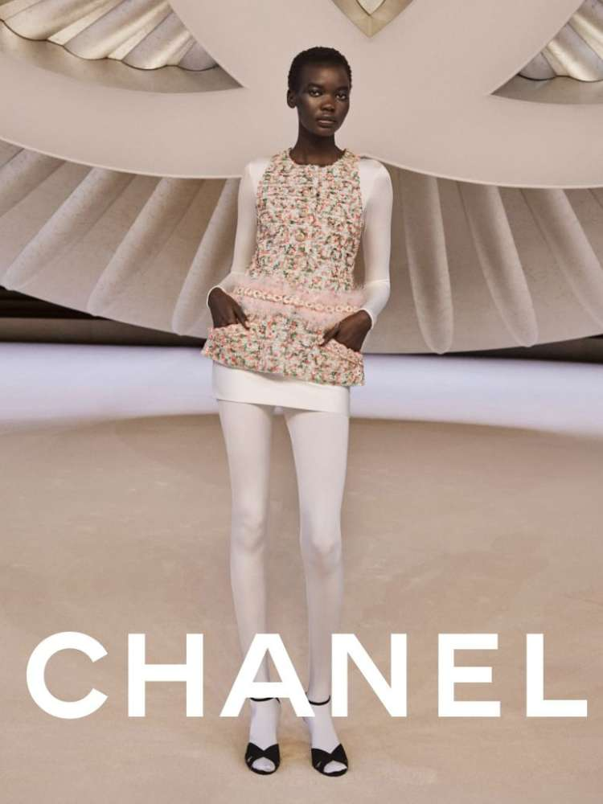
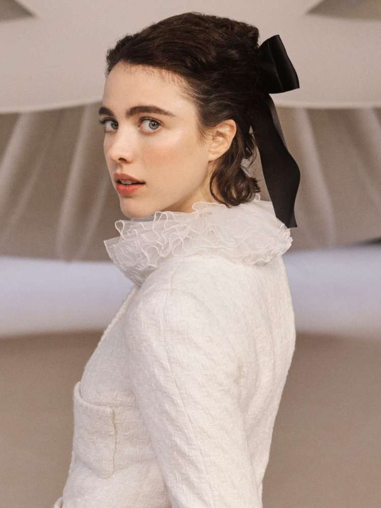

Tendências 2024
do mundo fashion
O que está na moda em 2024?
Em primeiro lugar, é importante entender a Alta-Costura.
Esse termo só pode ser usado em Paris, na França, e indica uma moda luxuosa da alto padrão, feita artesanalmente. As peças da passarela não estarão nas vitrines das grifes, que são as que ditam as tendências propriamente ditas.
Mas servem de referência ao se prestar atenção nos detalhes escolhidos pelos estilistas.
O brilho, que está em alta, promete seguir firme e forte.
Apareceu em roupas, acessórios e maquiagem.
Tem também meia-calça branca e laços para arrematar penteados variados nos cabelos.

Tendências da moda 2024: meia-calça branca
Meia-calça branca: há quem a ame ou a odeie.
Você faz parte de qual time? Pois saiba que a peça teve grande destaque no desfile da Chanel, um dos mais aguardados para identificar tendências da moda 2024.

Sucesso nas últimas temporadas, os laços seguem firmes e fortes nos desfiles. Apareceram pretos, tanto pequenos quanto grandes, em penteados variados.
